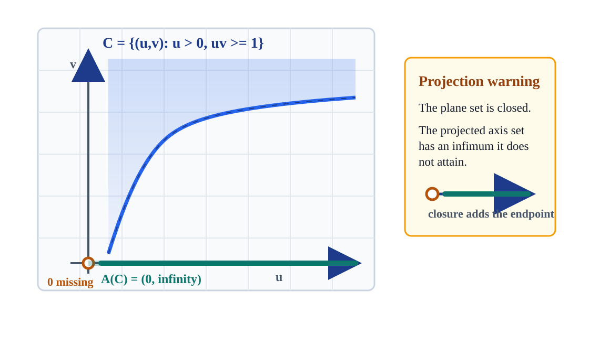
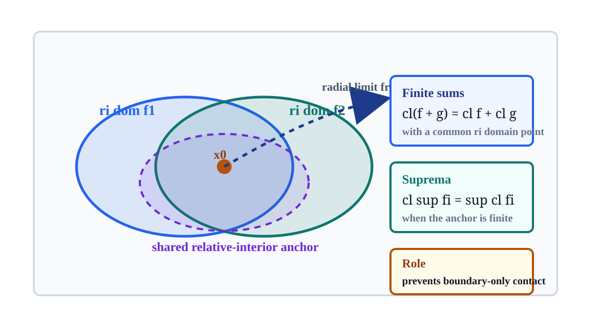
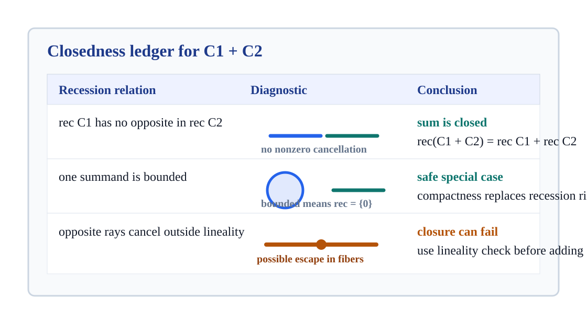
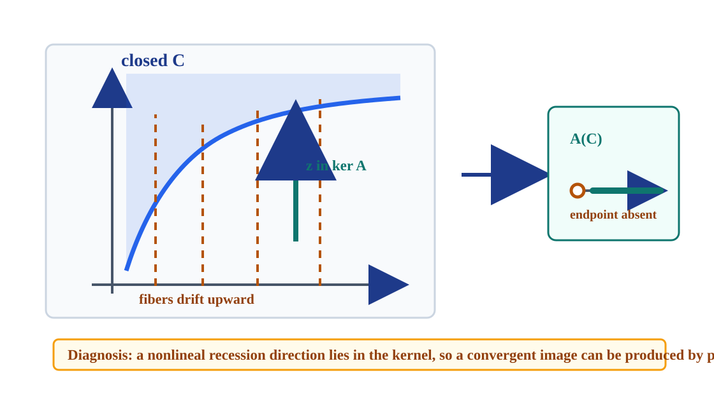

Qualification tools for deciding when convex sums, images, projections, epigraph operations, cones, and hulls keep their boundary points.
Diagnose closedness by looking for source sequences that escape to infinity while their images converge.
Relative-interior anchors prevent boundary-only contact, while recession tests exclude hidden escape directions.
Missing endpoints in projections become lower semi-continuity failures and nonattained infima for functions.

\(\operatorname{ri}(A C)=A(\operatorname{ri} C)\).
\(A(\operatorname{cl} C)\subseteq \operatorname{cl}(A C)\), and equality can fail.
A sequence \(x_k\in C\) has \(A x_k\to y\), but \(x_k\) has no convergent subsequence in the source.
\(C=\{(u,v):u>0,\ uv\ge 1\}\), \(A(u,v)=u\).
\(A C=(0,\infty)\), so \(0\in\operatorname{cl}(A C)\setminus A C\).
The points \((1/n,n)\) stay feasible, their projections approach zero, and the \(v\)-coordinate runs off to infinity.
The missing endpoint is not a geometric accident. It is a recession-direction certificate.

\(\operatorname{cl}(f_1+\cdots+f_m)=\operatorname{cl}f_1+\cdots+\operatorname{cl}f_m\)
when the relative interiors of the domains meet.
\(\operatorname{cl}\sup_i f_i=\sup_i \operatorname{cl} f_i\)
when a common relative-interior point has finite supremum.
From an anchor \(x_0\), radial limits toward \(y\) let closure pass through the operation term by term.
If every \(z\in \operatorname{rec}(\operatorname{cl} C)\cap \ker A\) is lineality, then
\(\operatorname{cl}(A C)=A(\operatorname{cl} C)\).
\(C\) closed and \(\operatorname{rec} C\cap \ker A=\{0\}\quad\Longrightarrow\quad A C\text{ closed}.\)
A reversible direction can be moved both forward and backward inside the closed set, so it can be quotiented away without creating an endpoint gap.
assets/recession-closedness-test.json stores the counterexample and safe cases used in this deck.

C_1+\cdots+C_m=A(C_1\times\cdots\times C_m),
where \(A(x_1,\ldots,x_m)=x_1+\cdots+x_m\).
If \(z_i\in\operatorname{rec} C_i\) and \(\sum_i z_i=0\), then each \(z_i\) must be lineality.
If \(C_1\) has no recession direction opposite one of \(C_2\), then \(C_1+C_2\) is closed. A bounded summand automatically satisfies this.
\(\operatorname{rec}(A(\operatorname{cl} C))=A(\operatorname{rec}(\operatorname{cl} C))\)
under the same root-test hypothesis.
The vertical direction is in \(\ker A\), is a recession direction, and is not reversible. That is exactly the hidden fiber escape.

Closed convex cones add cleanly when zero-sum recession cancellations are only lineality.
\(\operatorname{cl} K=K\cup\operatorname{rec} C\)
for the cone \(K\) generated by a closed \(C\) not containing the origin.
If \(C\) is bounded and avoids the origin, then \(\operatorname{rec} C=\{0\}\), so the generated cone is closed.
Closed sets with the same recession cone have a closed convex hull with that same recession cone.
\((A h)(y)=\inf\{h(x):A x=y\}\).
B(x,\mu)=(A x,\mu),\qquad B(\operatorname{epi} h)=\operatorname{epi}(A h).
A downward vertical recession in the image epigraph means the infimum is approached without being attained.
Under the recession condition, \(A h\) is closed and proper, its recession function is the image recession function, and each finite value is attained.
\(C=\{(u,v):u>0,\ uv\ge 1\}\) is closed, but \(A(u,v)=u\) forgets the unbounded coordinate and produces \((0,\infty)\).
Add \(v\le M\). Then \(u\ge 1/M\), so the projection is a closed ray \([1/M,\infty)\).
Keep a coordinate that detects the escaping vertical direction. The null recession obstruction disappears.
For function operations, a shared relative-interior point can replace direct closedness of each intermediate expression.
{
"point_n": [1/n, n],
"in_C": "yes, because (1/n) n = 1",
"A(point_n)": "1/n -> 0",
"endpoint_attained": false,
"closure_adds_endpoint": true
}The image sequence converges, but its source sequence has no bounded subsequence. The missing compactness is exactly what the recession cone test detects.
Ask students to predict which field changes when the fiber is bounded or the projection keeps \(v\).
| Operation | Qualification | Closedness Payoff | Failure To Watch |
|---|---|---|---|
| Linear image \(A C\) | \(\operatorname{rec}(\operatorname{cl} C)\cap\ker A\) is lineality | \(\operatorname{cl}(A C)=A(\operatorname{cl} C)\) | unbounded fibers with convergent images |
| Sum \(C_1+\cdots+C_m\) | zero-sum recession directions are lineality | closed sum and additive recession cone | opposite one-way recession rays |
| Infimal image \(A h\) | no hidden downward recession in the epigraph image | closed proper function; finite values attained | lower semi-continuity failure |
| Finite sum or supremum of functions | closed inputs, or common relative-interior anchor for closure formulas | closure passes through the operation | domains touching only on boundary |
| Generated cones and convex hulls | bounded generator away from origin, or common recession cone | closed cone or closed hull with known recession cone | new ray appears only in the limit |
Kill no one-way recession direction.
Block nonlineal cancellation.
Keep epigraph fibers closed below.
Anchor closure away from boundary-only contact.
Image, sum, epigraph projection, cone generation, or convex hull.
Find recession directions that the operation cannot see.
Lineality, trivial kernel intersection, common relative interior, or bounded generator.
Closed image, closed sum, lower semi-continuity, attainment, or closed hull.